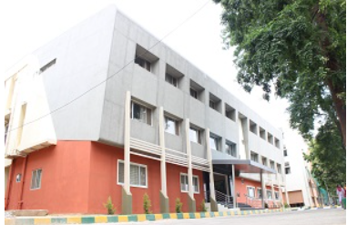

From the Desk of Dr. Rudranna Nandihalli, HoD (Electrical and Electronics Engineering):
The Department of Electrical and Electronics, is one of the oldest departments at R V College ofEngineering. Established in the year 1963, the department has well qualified; passionate and dedicated staff, most of who are engaged in path breaking research and development. With a current annual intake of 60 students from all parts of India, the staff to student ratio now stands at a plausible 1:13.
The Course at the department, is a healthy amalgam of Power Engineering, Electronics and Computers; comprehensive and in keeping modern trends of Electrical and Electronics Engineering education. Course pattern at the department is planned to keep the students up to date with the recent trends and shifting technological paradigms, making them industry ready. The course was accredited by National Board of Accreditation (NBA). The department has a total of 21 faculty members with various specializations, out of which 8 are PhD holders and all remaining 11 are pursuing PhD. The average experience of the faculty is very high. Students are required to undergo quizzes in addition to assignments and self study evaluation. They are evaluated on regular basis there by making the course learning and just not grade oriented.
VISION
Attain technical excellence in Electrical and Electronics Engineering through graduate programs and interdisciplinary research related to sustainability in power, energy and allied fields.
MISSION
- To provide technical education that combines rigorous academic study and the excitement of innovation enabling the students to engage in lifelong learning
- To establish Center of Excellence in sustainable electrical energy , smart grids and systems.
- To establish tie-ups with industries and institutions of repute and to foster building up of a wide knowledge base to keep in tune with upcoming technologies.
- To motivate commitment of faculty and students to collate, generate, disseminate, preserve knowledge and to work for the benefit of society.
- To develop simple, appropriate and cost effective inclusive technologies which are instrumental in the up-liftment of rural society.
Programs Offered
UG Programs:
Bachelor of Engineering in Electrical & Electronics Engineering (EEE) with approved intake of 60 students and a lateral entry of 20% from 2nd year.
PG Programs:
MTech Programs for Power Electronics:click here to learn more
- M.Tech Programme in Power Electronics with approved intake of 18 students.
Research Programs:
B.E. ELECTRICAL AND ELECTRONICS ENGINEERING
PROGRAMME EDUCATIONAL OBJECTIVES:
- PEO1: To provide a strong foundation in Mathematics, Science and Engineering fundamentals as well as comprehend, analyze, design, innovate and develop products for real life applications.
- PEO2: To inculcate ethical attitude, effective communication skills, leadership qualities and team spirit for a successful professional career with concern for society.
- PEO3: To provide a holistic academic environment to foster excellence, entrepreneurship and multidisciplinary approach to inculcate an aptitude for research and lifelong learning.
PROGRAMME OUTCOMES:
- Engineering knowledge: Apply the knowledge of mathematics, science, engineering fundamentals, and an engineering specialization to the solution of complex engineering problems.
- Problem analysis: Identify, formulate, review research literature, and analyze complex engineering problems reaching substantiated conclusions using first principles of mathematics, natural sciences, and engineering sciences.
- Design/development of solutions: Design solutions for complex engineering problems and design system components or processes that meet the specified needs with appropriate consideration for the public health and safety, and the cultural, societal, and environmental considerations.
- Conduct investigations of complex problems: Use research-based knowledge and research methods including design of experiments, analysis and interpretation of data, and synthesis of the information to provide valid conclusions.
- Modern tool usage: Create, select, and apply appropriate techniques, resources, and modern engineering and IT tools including prediction and modeling to complex engineering activities with an understanding of the limitations.
- The engineer and society: Apply reasoning informed by the contextual knowledge to assess societal, health, safety, legal and cultural issues and the consequent responsibilities relevant to the professional engineering practice.
- Environment and sustainability: Understand the impact of the professional engineering solutions in societal and environmental contexts, and demonstrate the knowledge of, and need for sustainable development.
- Ethics: Apply ethical principles and commit to professional ethics and responsibilities and norms of the engineering practice.
- Individual and team work: Function effectively as an individual, and as a member or leader in diverse teams, and in multidisciplinary settings.
- Communication: Communicate effectively on complex engineering activities with the engineering community and with society at large, such as, being able to comprehend and write effective reports and design documentation, make effective presentations, and give and receive clear instructions.
- Project management and finance: Demonstrate knowledge and understanding of the engineering and management principles and apply these to one’s own work, as a member and leader in a team, to manage projects and in multidisciplinary environments.
- Life-long learning: Recognize the need for, and have the preparation and ability to engage in independent and life-long learning in the broadest context of technological change.
M.TECH POWER ELECTRONICS
(2018 scheme-Autonomous)
Vision
Promotion of technical excellence in Electrical and Electronics Engineering by offering programs to produce Engineers with dynamic well rounded personalities adaptable to ever increasing demands of emerging technologies involving analytical and practical skills, with commitment to research and development.
Mission
- To provide technical education that combines rigorous academic study and the excitement of innovation enabling the graduates to engage in lifelong learning which is essential to improve performance continuously and excel in their career.
- To establish research and development center of repute so as to encourage active participation with industry by faculty and students to take on practical problems of industry and to provide feasible solutions.
- To establish tie-ups with institutions of national and international repute and to foster building up of a wide knowledge base to keep in tune with ever increasing demands of technologies.